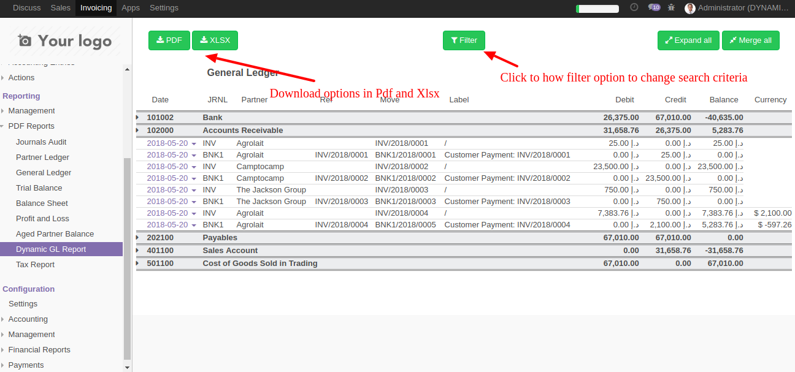
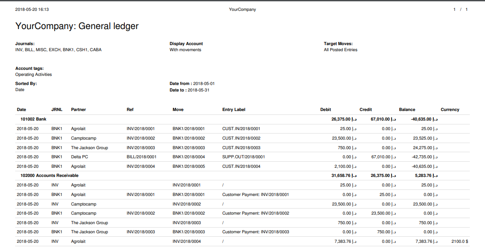

Interactive filter pannel with extra filters
Report welcomes you with a very beautiful filter section with much more options
This section have extra options
- By Accounts By Account Tags By Analytic Accounts By Partners
After selecting appropriate filters, click on Apply button to show results on the screen.
Here you can get a brief details of the accounts. Click on any line to expand to get a detailed view.

Here you have option to navigate to Journal entry or Invoice record easily
Download report in Pdf and Xlsx formats.
 